A multilingual cultural flashcard press and study desk in six languages (English, Portuguese, Spanish, Hebrew, Chinese, Hindi): browse illustrated decks, flip and master specimen cards, generate new decks with local WebGPU or cloud AI, and print A4/Letter sheets with cutting guides. Latest product brief ↓
Hindi, a sixth language, for readers in India
Before
Snapcards spoke Portuguese, Spanish, English, Hebrew and Chinese. A Hindi reader got another language, and Hindi text had no face of its own, because Nunito and DM Sans draw Latin only. Each phone fell back to its own Devanagari font. A deck could not be translated into Hindi: the database's lang check refused it. A Hindi word also slugged to nothing, so every Hindi card of a deck shared the same empty session key.
After
hi is a full locale. /hi/about and the ad landings /hi/kids, /hi/teachers and /hi/printed are pre-rendered as <html lang="hi" dir="ltr">, and /hi, the sitemap and Accept-Language negotiation include it. messages/hi.json carries all 541 keys, the landing pages' included, with lang_hi, ugc_lang_hi and lang_opt_hi, which all six catalogues now have. Noto Sans Devanagari is served by the app under the Nunito and DM Sans names, reached by a Devanagari unicode-range alone, so Latin text never loads it. It comes from @fontsource-variable/noto-sans-devanagari@5.3.0 (OFL), the same release as the other faces, 121 KB, sha256 3b3cae4d…5e730. Decks can be generated and translated in Hindi. The form's language menu, the browser's offline word list, both draft effects and the translation tables (migration 20261125_translation_lang_hi) all accept hi.
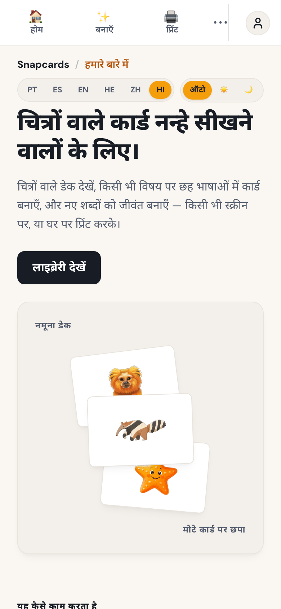
/hi/about, light, 390 × 844The heading and body in the app's own Devanagari face. The language switch takes a sixth pill and still fits a phone.
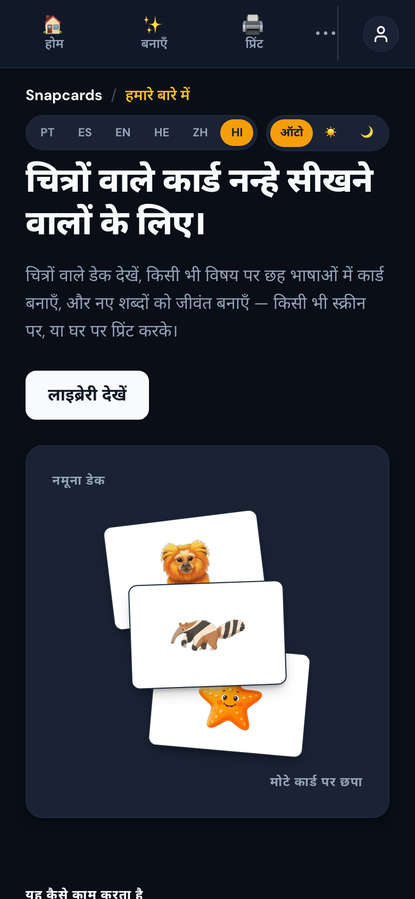
/hi/about, darkThe same page in the dark theme.
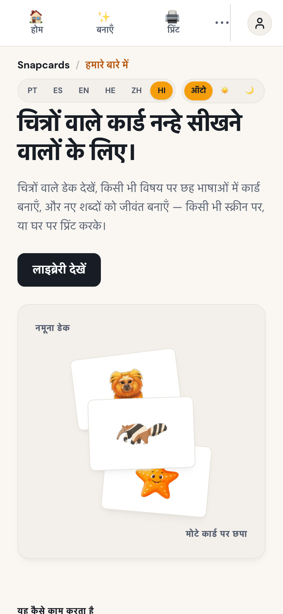
Without the faceThe same page with the file withheld. The heading falls back to macOS's Devanagari font. On Windows and on older Android phones the fallback is a different font again.
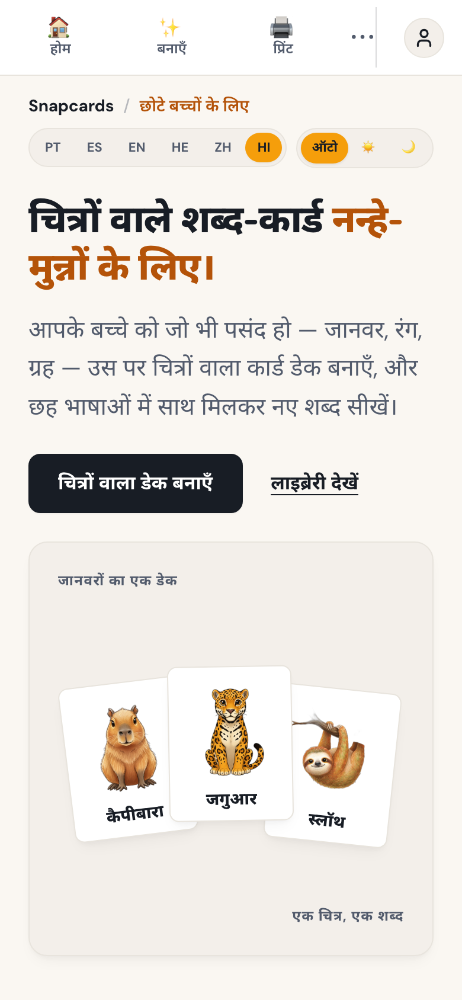
/hi/kids, lightThe kids ad landing, saying six languages, with the card words in Hindi.
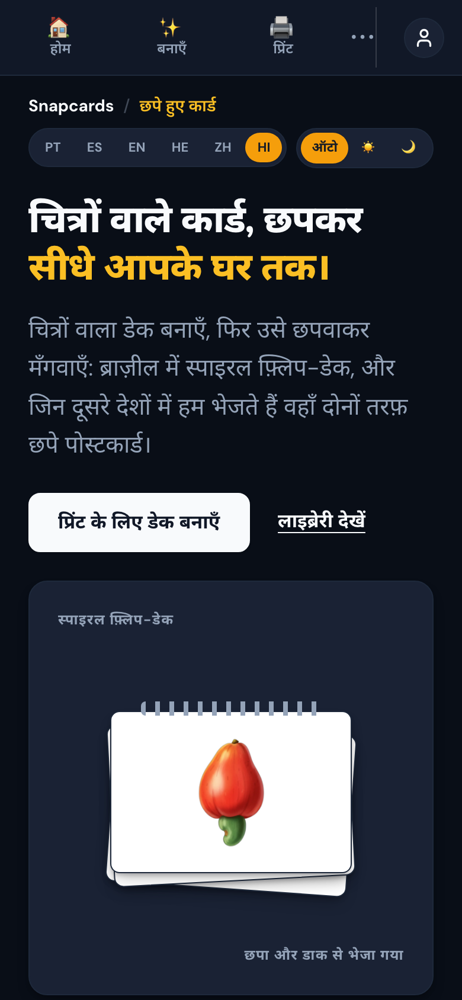
/hi/printed, darkLower down, it lists the countries cards ship to. This capture predates India joining them.
India now prints. IN joins _printCountries and pays in rupees. Prodigi posts the cards. In Prodigi's sandbox, 3 postcards to India cost $1.59 for the cards and $18.38 for shipping, $19.97 in all. Stripe's test mode quoted INR to BRL and opened a Checkout Session in inr. 20261125_print_country_in adds India to the order's country check and restates the machine with the rupee price. The Hindi About page and /hi/printed now offer posted postcards, as in the other Prodigi countries, and every catalogue's printed page lists India. Indian bank cards often refuse foreign merchants, because international use is off by default and 3-D Secure is required. The kids page and About say six languages in every catalogue.
The screenshots are Playwright 1.61.1's Chromium on the pre-rendered documents/hi/about/index.html, without a cluster. The acceptance case hindi-about-devanagari checks the served lang and direction, and that the Devanagari face loads on /hi/about. Gates: generate, lint and test are green.
Snapcards now reads, makes and translates decks in Hindi, and has Hindi landing pages at /hi/about, /hi/kids, /hi/teachers and /hi/printed.
A sign-up is a Google Ads conversion
Before
The tag frame measured page views and remarketed, but Search campaigns had nothing to bid on: no conversion reached Google when a reader made an account.
After
meta.googleTag.conversions: signup: "BAXrCP28w78dEJbG4L8q" declares Google Ads' “Sign-up (web)”. When a reader's guest becomes a person, by a passkey made for it or a provider linked to it, the terminal sends gtag("event", "conversion", {send_to: "AW-11407991574/BAXrCP28w78dEJbG4L8q", transaction_id: <account id>}) through the bridge, so Google counts each account once and applies the reader's consent.
What the reader does
Reported
Keeps their guest with a passkey, or with Google from a guest that wrote
one conversion, the account's id its transaction
Signs in to an account already made, reloads, signs out, or is minted a guest
nothing
Any of these on localhost or a test host
nothing: the bridge runs only on snapcards.fun and www.snapcards.fun
Signs in with Google before writing anything, making a new account
nothing yet: the terminal cannot tell it from a returning sign-in
Gates: generate, lint and test green; omnishell's conversions.test.ts and login smokes, pronto's browser-security.test.ts cover each row above.
Snapcards now reports each reader who makes an account to its Google Ads campaigns.
Three landing pages for search ads: kids, teachers, printed cards
Before
A search ad could only lead to the library or to About, neither of which answers what the reader searched for: picture flashcards for a child, flashcards for a lesson, or printed cards in the post.
After
/kids, /teachers and /printed (and /en/…, /es/…, /he/…, /zh/…) are written per locale at build like About: one headline matching the ad's theme, three benefits, cards from the seed decks, Create as the one way in and the library beside it. The printed page names only the countries an order may ship to (Brazil's spiral flip-deck, postcards to Argentina, Israel, the United States, the United Kingdom and China). The strip does not list them; the sitemap does, and each document carries the Google tag frame and the consent bar as About does. Each document is about 19 KB and paints with no cluster and no script.
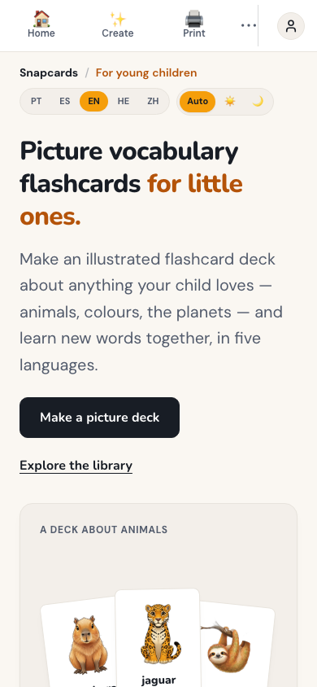
/en/kids · light
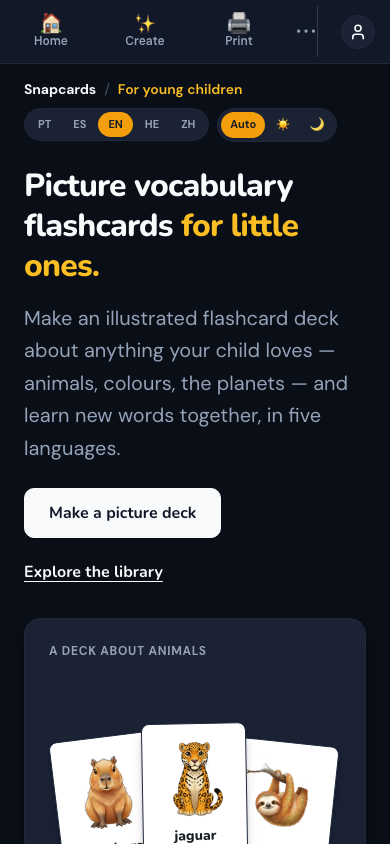
/en/kids · dark
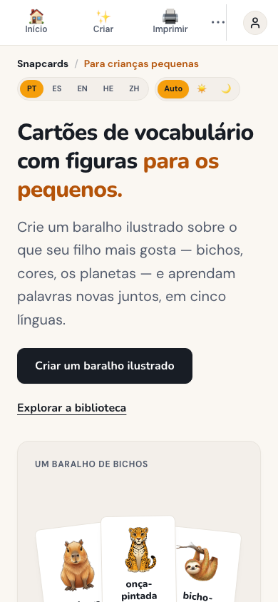
/kids · light
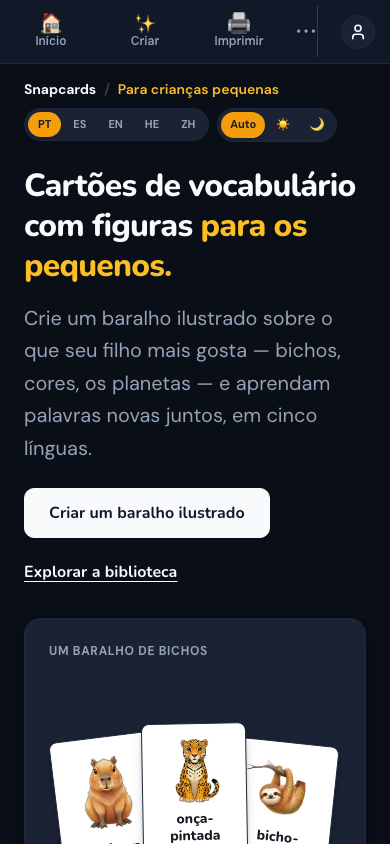
/kids · dark
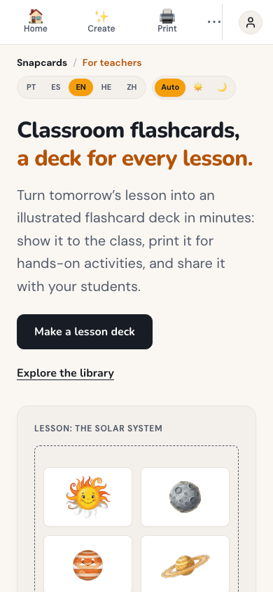
/en/teachers · light
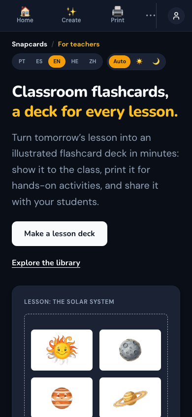
/en/teachers · dark
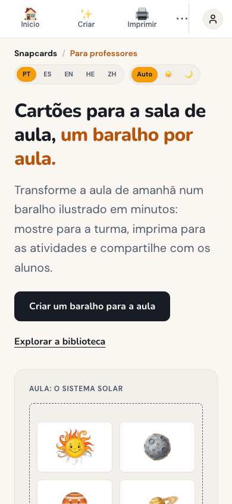
/teachers · light
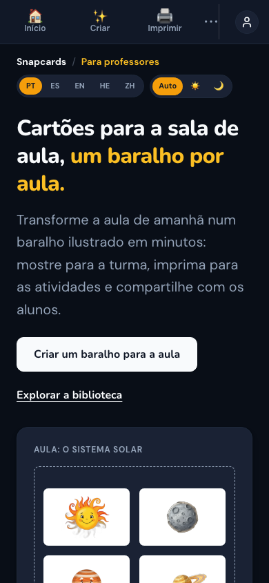
/teachers · dark
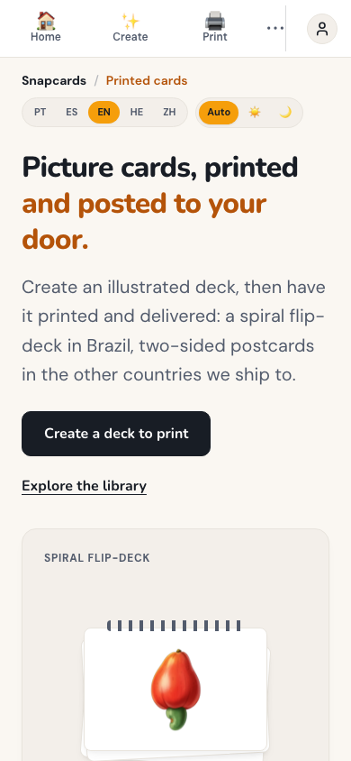
/en/printed · light
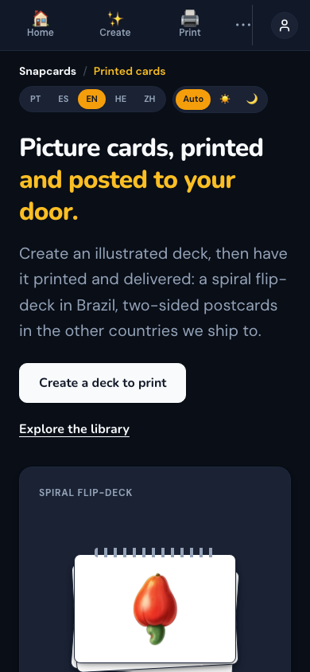
/en/printed · dark
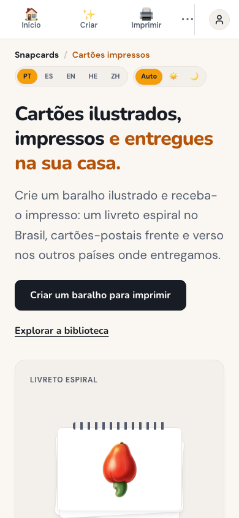
/printed · light
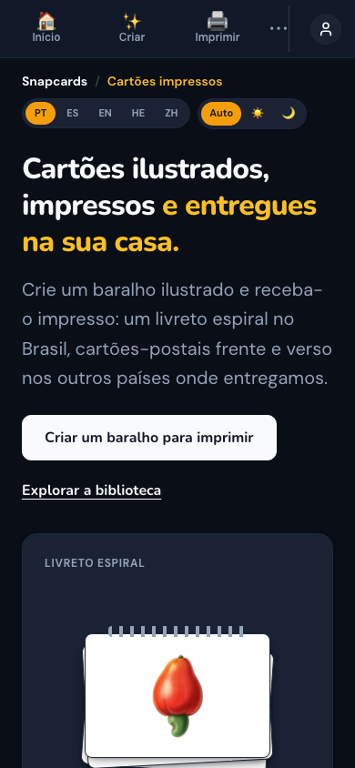
/printed · dark
Snapcards now has a landing page per ad theme in all five languages, each leading straight into Create.
Google Ads in a tag frame, and one consent bar for every reader
Before
Snapcards had no advertising measurement. A Google tag in the page itself could not remarket: the terminal's Trusted Types refused Google's viewthroughconversion script, and admitting it threw under the SES lockdown. Nothing asked a reader for consent, so readers in Brazil and the EEA could only ever send cookieless pings.
After
Google's tag (AW-11407991574) runs in /shell/tag.html, a hidden frame of the app's own origin with its own policy and realm, so its _gcl_* cookies are first-party and the app's document stays Google-free. On the first view, every reader, wherever they are, sees a compact bar in their language asking about advertising cookies. Accept and Reject look the same, and the page stays usable. Until the reader answers, advertising is denied and the bar stays. A Reject, or Global Privacy Control, is not asked again. The choice is kept on the device, stated to the frame before Google's tag configures, and can be reopened from a shield in the corner.
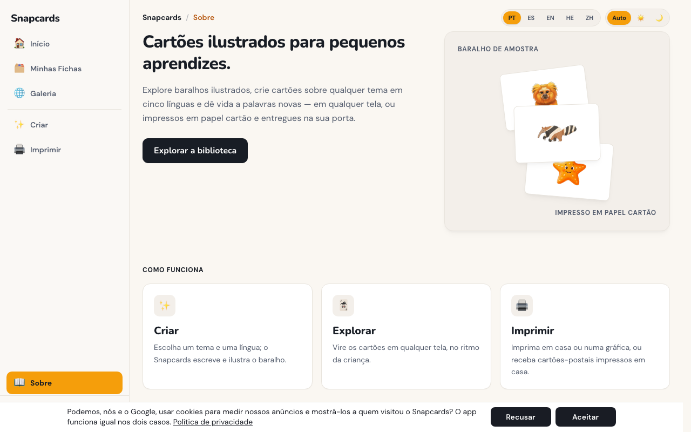
Portuguese, lightThe first view. Nothing of Google's is stored until Aceitar.
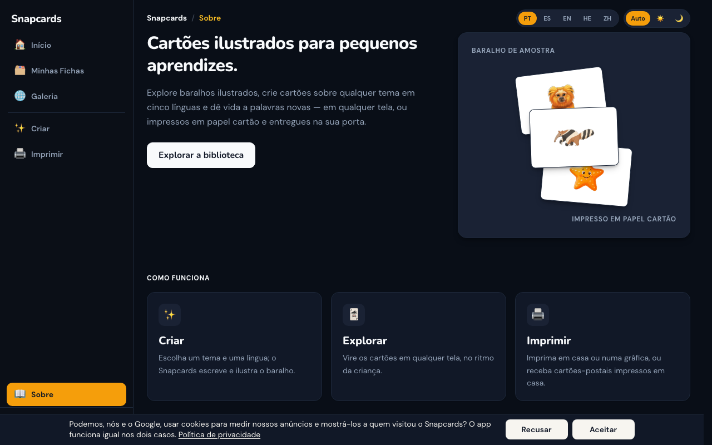
Portuguese, darkBuilt from the design's tokens, it follows the theme.
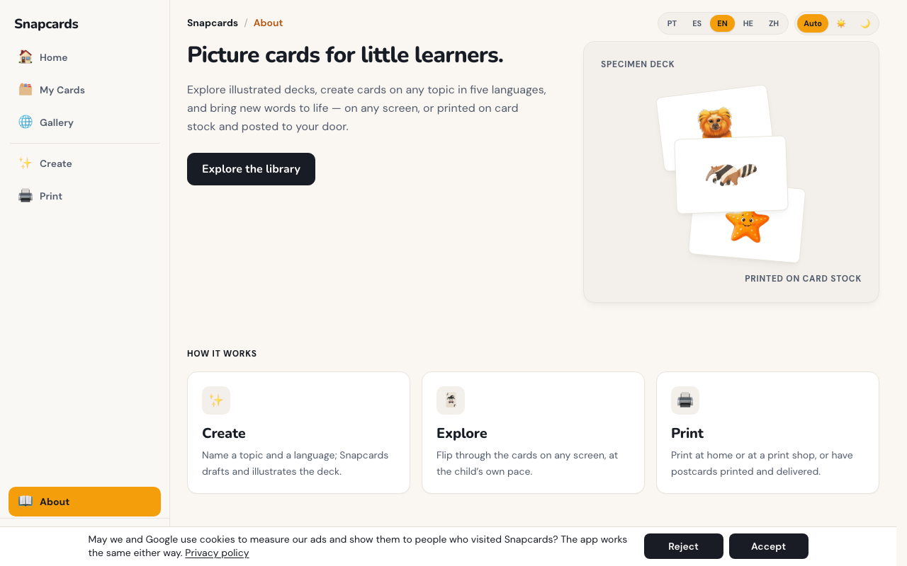
English, lightThe chrome_consent_* keys are in all five catalogues, and check i18n asks for each one.
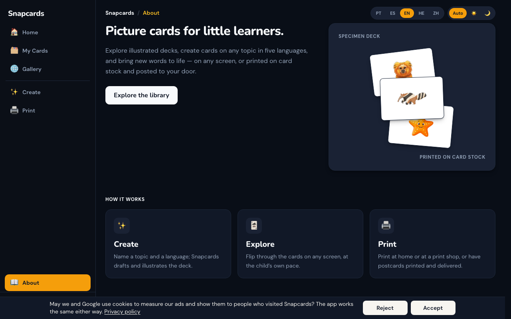
English, dark
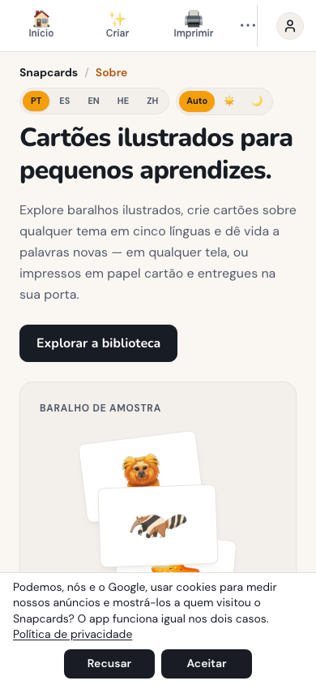
Phone, 390 × 844The bar wraps to the sentence above the two buttons, 139 pixels tall.
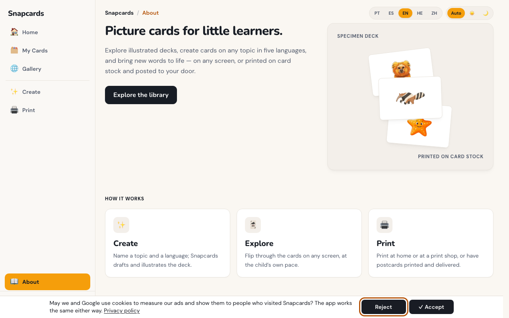
ReopenedThe shield reopens the bar from the keyboard with the held choice checked (aria-pressed). Escape returns focus to the shield.
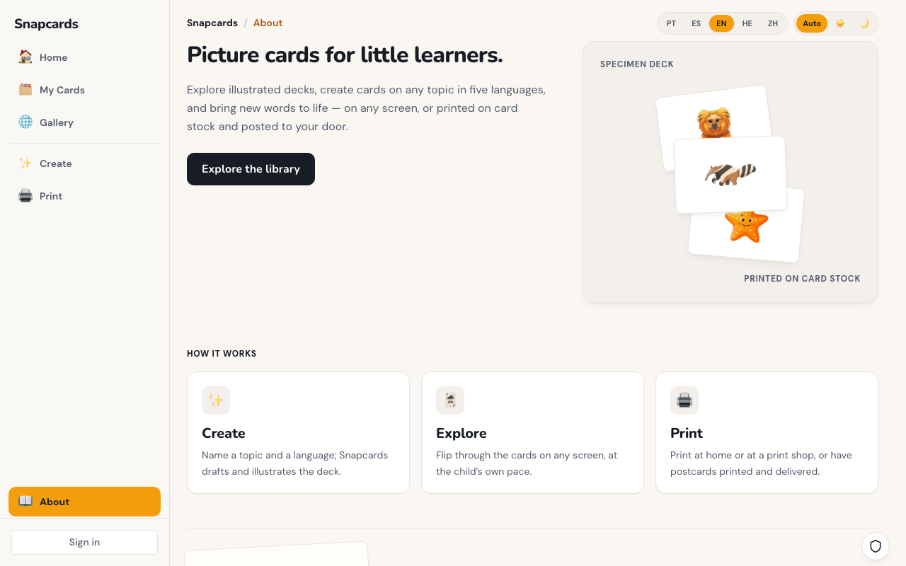
Global Privacy ControlRead as a Reject. No bar is shown, and the shield offers the choice.
What each reader gets
The check ran in Playwright 1.61.1's Chromium against this tree's shell/index.html, shell/tag.html and the terminal, with snapcards.fun mapped to a local door over TLS. Each landing carried ?gclid=TESTGCLID123, and the requests reached Google.
Advertising is the only purpose asked. Google's analytics_storage follows it, and the app's own measurement is never asked. Where the reader is does not matter: everyone sees the same bar. On localhost and every test host nothing is drawn, because only snapcards.fun and www.snapcards.fun run the tag. The replicated evidence row, the privacy policy's own text and conversion events are still to come.
Gates: generate, lint and test green. The browser check ran without a cluster, so the screenshots are taken on the pre-rendered About page.
Snapcards now measures its Google Ads from a first-party frame and asks every reader before writing advertising cookies.
Item-only print markup and starting anew from a cancelled checkout
Before
print-fx applied the 80% markup to Prodigi’s entire totalCost (including international courier shipping) and stuffed the shipping markup into the cards line, while cancelling an embedded Checkout session left the buyer on a pending receipt with no way to edit a mistyped email or start a new order until the two-hour Stripe session expired.
After
print-fx marks up Prodigi’s non-shipping cost (cost - shipping) alone and passes shipping through at 1×, and pending/cancelled receipts expose #btn-checkout-new (and clear on modal close) to restore the prior delivery fields into .checkout-delivery and focus #delivery-email immediately.
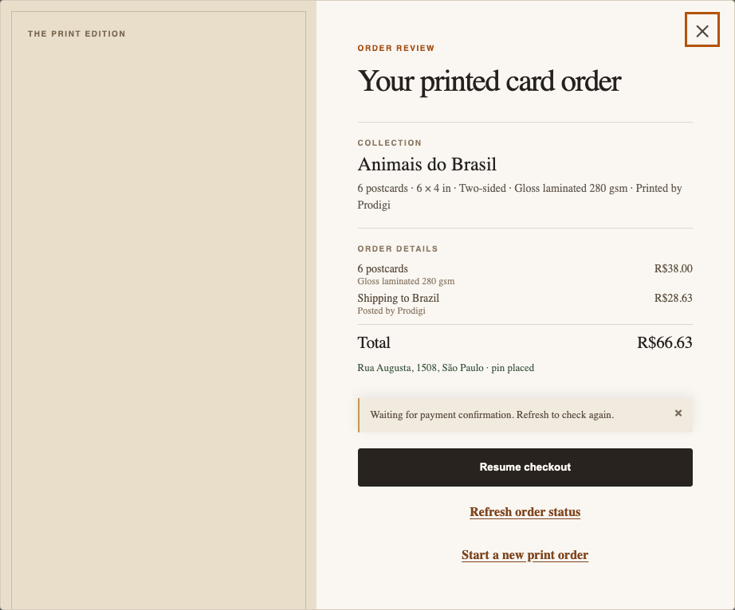
Cancelled checkout receipt with Start a new print order alongside Resume checkout.
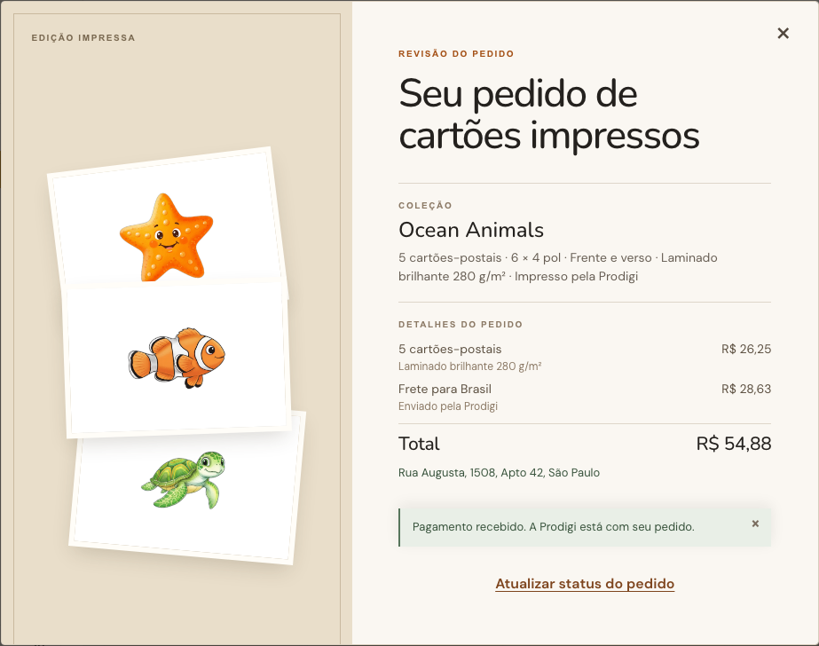
Simulator receipt with 80% markup on cards alone (R$ 26,25 + R$ 28,63 shipping = R$ 54,88).
Gates: generate, build, lint, test (128/128), and integrate@host (replay, check-acceptance, check-checkout-ui, check-commerce, check-visual) green.
Phones squeezed all six navigation entries into one horizontal top strip and hid .shell-me, leaving tiny labels and no visible account avatar on mobile, while narrow tablets inherited the phone strip up to 859 pixels.
After
Phones (<768px) keep the sticky 64-pixel top bar to the three primary calls to action (Home, Create, Print) plus the active screen’s #btn-top-login avatar tile in the fourth column, opening a bottom sheet with My Cards, Gallery, About, account status, Passkey/Google/Guest sign-in, and signed-in sign-out alongside inline library shelf tabs. Tablets (768px–1099px) use an 88-pixel icon+label left rail with a two-column card grid; desktops (>=1100px) keep the 240-pixel sidebar.
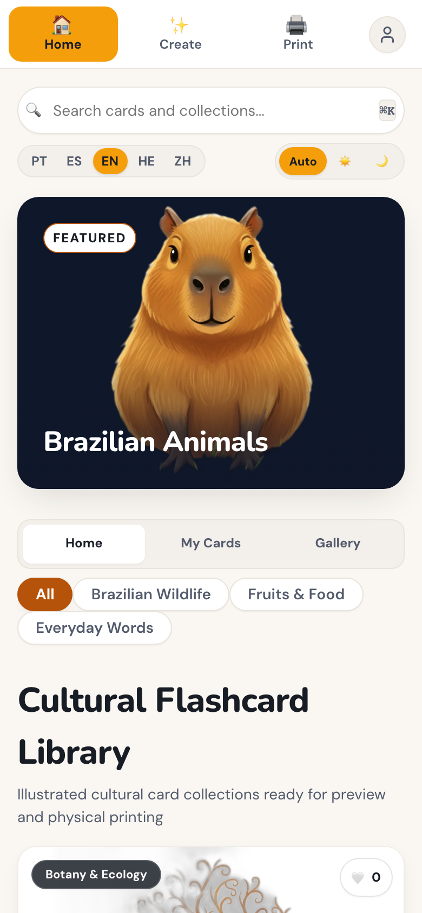
Phone (390×844): three primary CTAs plus the fourth-column avatar button and inline shelf switcher.
Measured Docker watch: presentation saves in 532–654 ms
Authored HTML and CSS now reach Docker launch directly, with no compiler on save. Native watch is disabled pending lifecycle design. Existing declared capabilities can gain new HTML bindings without generation. Measurements, browser evidence, and scope.
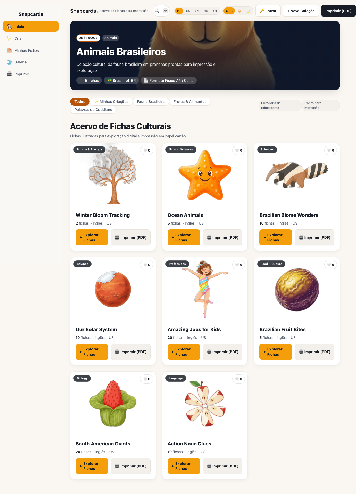
The existing catalog after a measured presentation edit and refresh.
A collection continues while its screen comes and goes
Generation and its progress now follow durable charts on the server. The creation screen attaches to the collection it names, and a saved form from the previous release can recover its collection after a reload. Existing decks and pending work stay in place during the database upgrade.
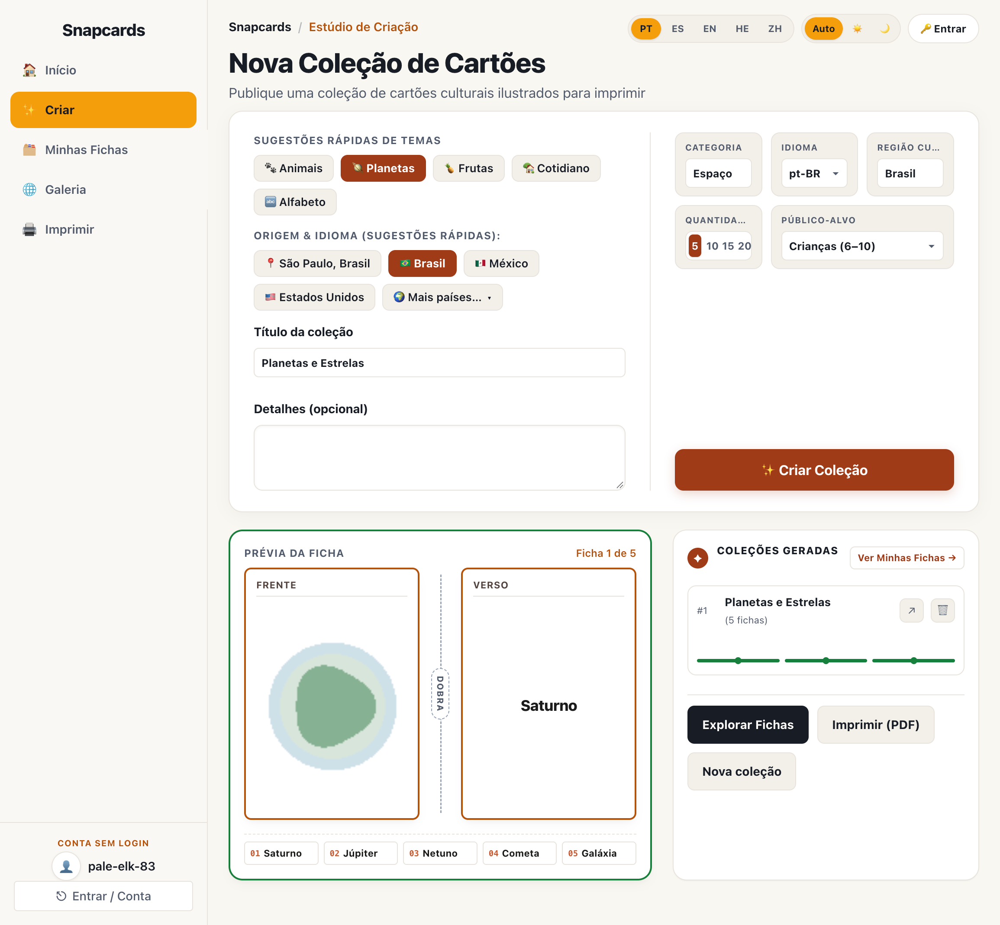
Created in the isolated app: five cards and their completed generation progress.
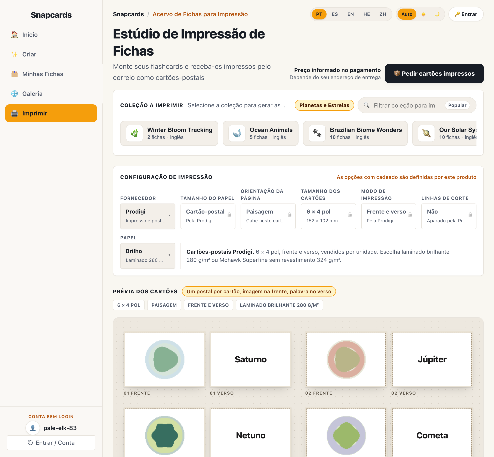
The new collection follows through to the print studio and its postcard options.
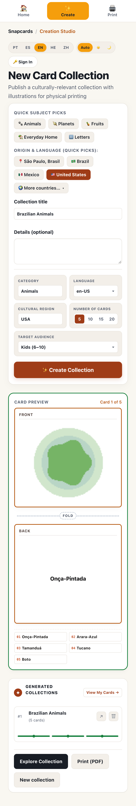
At 400 pixels wide, the saved collection returned after a reload and finished its five cards.
The live playtest created the collection, moved from Saturno to Júpiter, and changed the print vendor and stock. On a 400-pixel phone viewport, an immediate reload returned a server 504 under concurrent load; a retry recovered the same five-card collection and reached Ready. The integration run passed acceptance, checkout, commerce, replay and visual checks. Retained-database tests cover forward migration, replay, existing effects and jobs, and forms from the earlier release.
Decks their authors own, favourites of their own, and progress that tells the truth
A deck belongs to the person who generated it, guest or signed in: only they edit or delete it, and it stays theirs after a reload. Each reader favourites any deck for themselves and every deck shows how many have; a translation is a cache every reader shares. The /generate form survives a reload, and each of a deck's three progress bars is there from submit and fills from what really happened.
Before
Which decks were yours lived in a tab-only list, so a reload or a pasted link hid ✏️ from a deck's own author, while the server took anyone's writes to any deck. One favourite flag was every visitor's. Reading a deck in another language wrote into its cards. Level 1 looked finished before anything started, levels 2 and 3 appeared only once their art was queued, and a reload mid-generation forgot the deck.
After
Decks and cards carry their owner and only the owner writes them; the page asks the reader's own me row. A favourite is the reader's private row, counted in deck_stats. Translations live in deck_translation and card_translation. The form is the browser's, durability device. Level 1 is the form's own state; levels 2 and 3 fill from their counts, green drawn, red refused, the track still waiting.
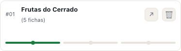
At submit: the words are written, both pictures still waiting.
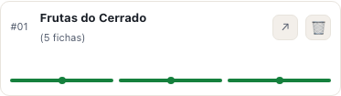
Settled: every card drawn at both levels.
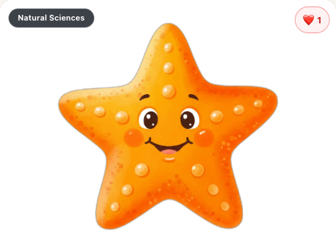
The reader's own favourite and everyone's count.✏️ on the author's deck, after a reload.
A device row had read as an unconfirmed write forever, since TanStack's localStorage collection never cleared its own optimistic row: mecha's client now keeps a device table local-only and writes it through to the same storage, so stored rows stay. Gates: generate, lint and test green; integrate's acceptance driver walks two readers' favourites, a reload mid-generation and the ✏️ for its author and nobody else.
Editing a card, deleting it in two taps, and decks that finish on their own
A reader names a deck with a short title and refines it with optional details; each card carries what its picture shows in the deck's language, editable in a bottom sheet that redraws the card's picture from it; a card goes with two taps on one button; the /generate preview shows the deck being generated; and a deck's text levels start on the server, so it finishes with no tab open.
Before
The topic box was both the deck's name and its instructions. The only picture description was English. Deleting asked its question in a native disclosure, and the rail's sheet of styles never loaded on the study screens. After exploring another deck, /generate kept showing it while a new one generated. A deck's heavy text started only if its author's tab stayed open.
After
"Título da coleção" names the deck and "Detalhes (opcional)" only steers its text. ✏️ opens a sheet with the card's image, its Portuguese description and "Gerar de novo", which draws a new run of the card's level 3 after translating the description; a refusal shows the no-art frame in the sheet and keeps the card's art. 🗑 turns into a red "Apagar?" for four seconds. The preview binds the generation draft. The deck-advance hatch starts each level from the rows.
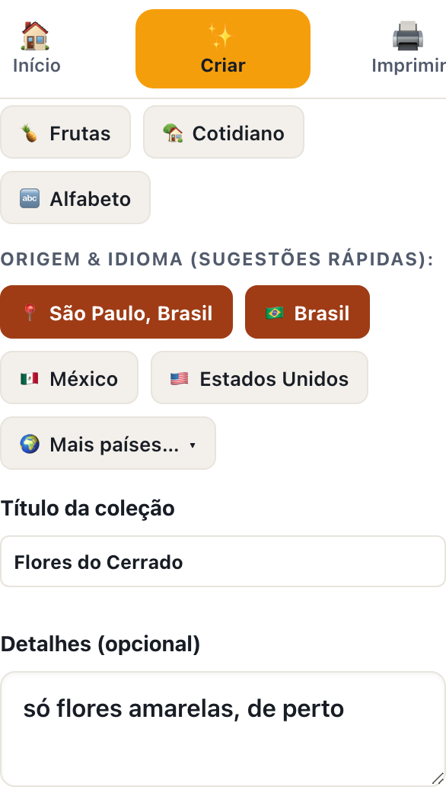
Title and details, apart.
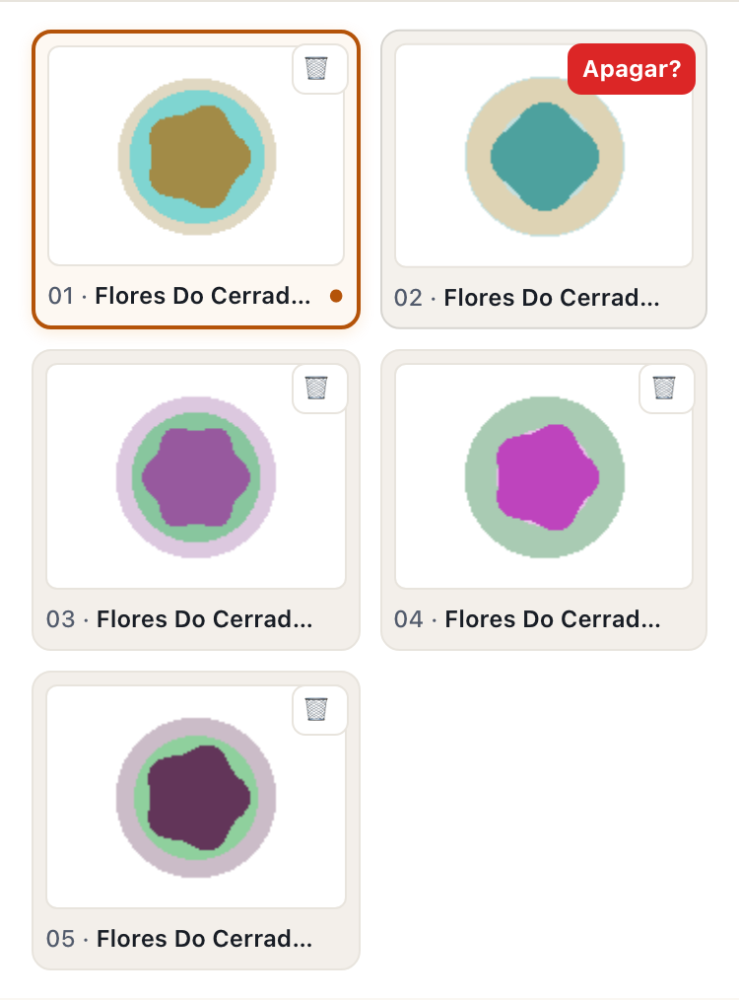
One tap arms the button; it reverts after four seconds.
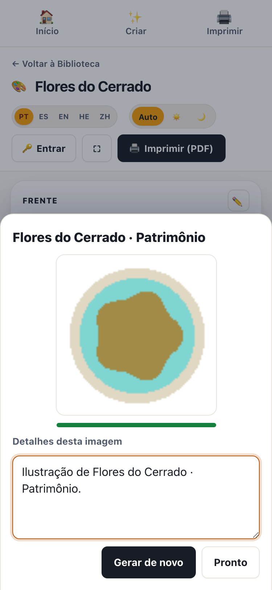
The edit sheet at 375px, the description in the deck's language.
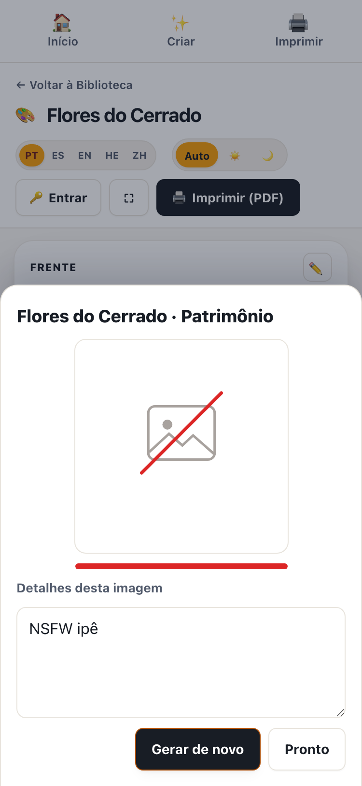
A refused redraw: the no-art frame and a red bar, the card's own art untouched.
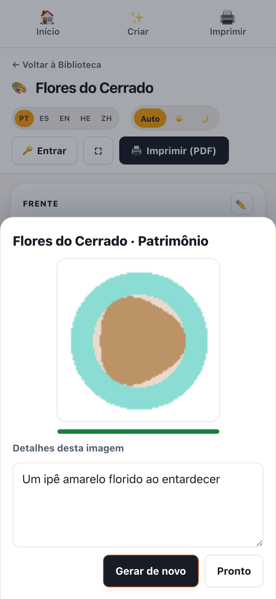
Redrawn: the new image replaces the card's art.
Gates: generate, lint and test green; integrate's acceptance driver walks the title, the preview, the edit sheet and the two-tap delete in the cluster.
A phone-first library and honest generation
The featured hero becomes one link with its photo in view; navigation, pickers and labels stay readable and in the reader's language on a phone; and generation reports each level's real outcome.
Before
Print and explore buttons covered the hero's image. The country picker was the operating system's list, unreadable in dark mode. Ver Minhas Fichas opened the unfiltered home. Level-1 labels outlived level-3 images, and a level that failed showed as complete.
After
The hero shows only its badge and title over the photo. Countries open in a styled sheet that names the pick. My Cards opens filtered. Labels follow each level's word. Transient image failures retry through the airlock, and a level short of art shows as partial or failed with its count.
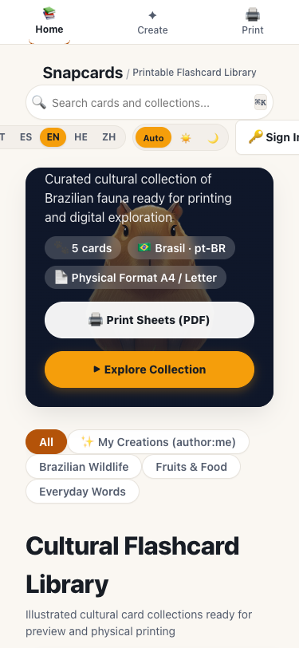
Before: the hero at 375px, buttons over the image.After: badge and title only, the photo in view.
From a catalogue link to a print order.
The previous “Mail to home via Prodigi” button opened Prodigi’s product catalogue. It did not create an order or carry the selected cards into a fulfillment flow. Print Studio now prepares a fixed PDF of the chosen collection and offers a checkout path. The existing paper, layout and illustration design is retained.
The redesigned dialog passed the focused checkout acceptance scenario in the local Docker application after installing the rebuilt static assets. Desktop and 390px captures show the actual selected illustrations. No live purchase was attempted, no payment was charged, and no fulfillment email was sent.
Before the redesign · generated application
The earlier Portuguese interface selected the Spanish fauna collection, “South American Giants,” switched to horizontal duplex, downloaded its two-page A4 PDF, and simulated approval. The test verified the PDF title and rejected commerce, Stripe or EmailJS requests. Download the captured order PDF.
390px · actual local appStacked cards and details, without horizontal overflow.
The inline box made an order feel like another setting in the studio. The redesigned modal gives the chosen collection room to lead: a fan of its own illustrated cards, its name and print layout, and a concise order summary. A single dark action anchors the review; the PDF remains available after preparation. Desktop places the cards beside the details, while the narrow view stacks them. Escape closes the dialog and returns focus to the studio.
A deliberate demo, without accidental delivery
The Pages mode is explicitly simulated. It shows that no charge, email or physical delivery will occur. The reader can prepare and download the actual PDF, then simulate approval or refusal. A live release instead obtains its price and shipping coverage from the server, opens Stripe Checkout, and uses the protected receipt to refresh order status.
Before payment · rendered fixtureThe review shows the collection and makes the no-charge demo mode visible. The artwork here is synthetic test data.After approval · rendered fixtureSimulated fulfillment is labelled as simulated. The frozen PDF remains downloadable.390px review · rendered fixtureThe card fan and order details stack on a narrow screen. The artwork is synthetic test data.
A PDF that still contains the cards
The browser captures a fixed-size clone of the print layout into PDF pages. It resolves each illustration before capture and fails if an illustration cannot be loaded. Pagination includes the full collection; duplex backs mirror positions within each physical sheet. Front and back registration uses matching masthead and row dimensions.
Illustrated front · PDF rasterized with PopplerThe fixture uses simple colored artwork to make missing images obvious.Mirrored back · PDF rasterized with PopplerPortuguese, Hebrew and Chinese remain visible. The printed text is rasterized with the page.
29 October · Where the cards go
An order now says where it goes, in the reader's own terms. The checkout asks “Where should we send it?” and keeps three statements side by side: the reader's words, a pin on a map, and the postal fields. They need not agree. A search runs on OpenStreetMap only when the reader presses Enter or Search, never while they type, and needs no key. Applying a suggestion places the pin and fills the street, city, state and postal code, and leaves the reader's words as written. Moving the pin away offers the street near it, and the street in the fields on the map, without choosing for the reader. The order freezes all three beside its PDF.
Asked, not assumedA search box, an explicit “Use my location”, and a way to type the address by hand.A suggestion, appliedThe pin and postal fields move; the reader’s words stay theirs.Two statements disagreeThe street near the pin, and the fields’ street on the map, each offered, neither imposed.Frozen with the orderThe receipt names the street and that a pin was placed; the draft is put away.Location firstThe reader’s position may be the first thing they give.Hebrew, 390pxThe map frame takes the page’s language and direction.
Getting there changed the platform beneath it. A unit's events are now typed by the program: the seat's printable-ASCII rule, which could not carry “Praça da Sé”, became a size bound plus the payload shape each event declares. The map runs in a sandboxed frame that is granted the reader's position only when it asks; the search runs in a worker under the app's own security policy. The single-file Pages release carries both: the page frames itself for the map, and its first script installs the policy before anything else runs.
Four reviews found what the gates did not: a country the form could not show slipping past the shipping check, a long place name refusing a whole suggestion list, “Use my location” failing silently as a first act, the address lookup asking while the reader typed, realm files loadable outside their sandbox. Each is fixed with a test that names it.
Evidence and remaining configuration
Check
Observed result
Browser bundle, type checking and lint
Passed using pinned Deno dependencies and the frozen lockfile.
Browser/PDF fixture
Passed: 17 cards become a 10-page duplex A4 PDF of approximately 2.4 MiB; the reader downloads it and selects simulated approval.
Missing illustration
Fails visibly and removes the temporary capture surface; no blank PDF is silently accepted.
Application acceptance
Passed print-checkout-demo against the refreshed local Docker app: real artwork, 390px overflow, Escape and focus return, duplex PDF title, download and simulated approval. No commerce, Stripe or EmailJS requests occurred.
Full integration
Not green: Docker image preparation exceeded its deadline before the full acceptance suite. The narrower static-assets build and focused local application scenario passed. No Cloudflare deployment was performed.
Delivery collection (29 October)
generate, lint, build and test passed; print-delivery and print-checkout-demo acceptance passed against the local app; the Pages bundle was walked in a browser through search, pin and both offers. Searches here asked OpenStreetMap a handful of times; acceptance answers them from fixtures.
Live sales
Require configured pricing, shipping countries, Stripe credentials and fulfillment mail setup. Provider tests do not establish a real charge or delivery.
Payment confirmation belongs to the verified server callback and order machine. Returning from Checkout does not mark an order paid. A paid order whose email fails remains a fulfillment problem; the reader is not asked to pay again.
Actual application and fixture evidence are labelled separately. The redesigned local scenario passes; this journal does not claim a completed live purchase or full Sayt integration gate.
Illustrated cards, stable journeys
The existing studio design remains the visual reference. This turn repairs generation, navigation, translation, and print behavior within that design.
Before
Unrelated decks could inherit a generating badge. Deletion could hit an oversized worker queue key. Translation could reorder cards or dismiss completion. The audience field remained Portuguese, and previews always claimed five cards.
After
Generation markers follow the owned deck, deletion targets its ID, and queue keys are bounded. Translation retains the selected position and completion state. Audience labels use the UI language; preview numbering follows the actual ordered card collection.
Live Cloudflare verification: English audience label. The content language and cultural region remain independently selectable.
Illustration, print, and UGC transfer
A neutral placeholder gives way to a fast Flux draft and then a Leonardo illustration. Border-connected neutral gray is whitened while enclosed illustration detail is preserved. The print back sheet appears for duplex modes, and front/back dimensions match. A read-only Neon export (201 decks, 1,680 cards) was imported into Cloudflare and R2 with all 1,678 referenced image objects verified by size and MD5.
Links and translations
Direct card links resolve the exact original word even after translation metadata is appended. Translation attempts use the committed draft revision as their identity, preventing old queue keys from being reused.
Live Cloudflare verification: the original English card URL selects Caixa Torácica, the deck title is translated, and the illustration loads from R2 through the Images binding.
Card navigation and collection entry
Previous stops at the first card. Next, Previous, collection links, and browser history keep the selected card and URL aligned without remounting the study screen.
Live Cloudflare navigation verification.Cloudflare verification in a fresh Safari session: the collection URL resolved to Pikachu, the first collection click selected Charmander in place, and browser Back skipped the entry URL.
Translations belong to the reader’s view
Live Cloudflare: Spanish → English retains the selected image and English labels, including while a Hebrew tab is open.Live Cloudflare: the previously mixed North Pole metadata and all fifteen card labels now resolve to Hebrew.
Stable study layout and continuous cold navigation
Study layout with contained thumbnail images and header controls beside the deck title.Delayed cold navigation: the library stays visible while the destination loads.The destination after the handoff.
Persistent library browsing and translation feedback
Before: searching Gallery cleared its filter and showed Home.After: Gallery and the solar query remain selected after opening a deck and returning with Back.Initial frame of the translation pulse.Peak frame of the translation pulse.Reduced-motion presentation.
Snapcards — Cultural Publishing & Flashcard Press
A flashcard and cultural publishing press for children learning new words. Pick a topic, get illustrated cards with cultural context, review and play in the browser, or layout cards for physical printing.
Data
Card sets, illustrated cards, review sessions, print layouts, and creation drafts, all held in the browser tab or synced across devices.
Screens
Cards — browse cultural card sets, filter by category and locale, search, see card counts, toggle favorites, and start a play or print session.
Generate — create a new card set by topic, category, locale, and region, dealing illustrated cards with cultural context.
Play — interactive flashcard reader. Flip cards to reveal word definitions, pronunciation hints, track mastered count, and celebrate completion.
Print Studio — the printing press. Layout cards on A4 or Letter sheets in 2×2 or 3×3 grids with cutting guides for physical card printing.